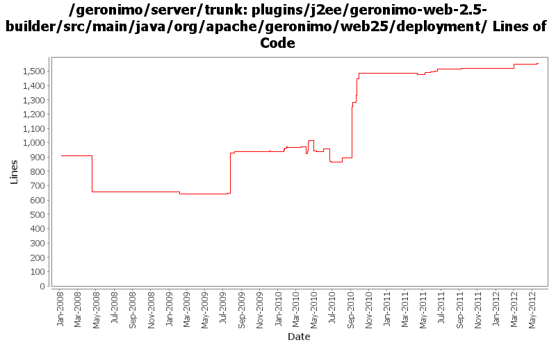

[root]/plugins/j2ee/geronimo-web-2.5-builder/src/main/java/org/apache/geronimo/web25/deployment
 merge
(4 files, 760 lines)
merge
(4 files, 760 lines)
 annotation
(5 files, 487 lines)
annotation
(5 files, 487 lines)
 webfragment
(39 files, 3350 lines)
webfragment
(39 files, 3350 lines)
 security
(1 files, 74 lines)
security
(1 files, 74 lines)
 utils
(3 files, 318 lines)
utils
(3 files, 318 lines)

| Author | Changes | Lines of Code | Lines per Change |
|---|---|---|---|
| Totals | 79 (100.0%) | 2272 (100.0%) | 28.7 |
| djencks | 40 (50.6%) | 1496 (65.8%) | 37.4 |
| xuhaihong | 19 (24.1%) | 675 (29.7%) | 35.5 |
| gawor | 6 (7.6%) | 42 (1.8%) | 7.0 |
| genspring | 4 (5.1%) | 21 (0.9%) | 5.2 |
| violalu | 1 (1.3%) | 15 (0.7%) | 15.0 |
| rwonly | 2 (2.5%) | 11 (0.5%) | 5.5 |
| kevan | 1 (1.3%) | 6 (0.3%) | 6.0 |
| jdillon | 2 (2.5%) | 4 (0.2%) | 2.0 |
| rickmcguire | 2 (2.5%) | 2 (0.1%) | 1.0 |
| vamsic007 | 2 (2.5%) | 0 (0.0%) | 0.0 |
GERONIMO-6352 Set session configurations while they are explicitly configured
344 lines of code changed in 1 file:
GERONIMO-6352 session configuration info is not serialized correctly
2 lines of code changed in 1 file:
GERONIMO-6292 Share the japser servlet between jasper plugin and web-container plugin.
35 lines of code changed in 3 files:
GERONIMO-6143 Create a fragment context for each sub modules in the EAR package
25 lines of code changed in 1 file:
GERONIMO-6043 gbean reordering so initorder can work
12 lines of code changed in 1 file:
GERONIMO-6024 use the identifySpecDDSchemaVersion to replace the new added method isSchemaDefined.
2 lines of code changed in 1 file:
GERONIMO-6025 make the url-pattern validation happen in a single place
9 lines of code changed in 1 file:
GERONIMO-6025 validate servlet and filter mapping url-patterns
7 lines of code changed in 1 file:
GERONIMO-6016 Geronimo can't handle well when modules in ear has the same name.
14 lines of code changed in 1 file:
GERONIMO-6002 allow gbean xml attributes to be overridden in config.xml
6 lines of code changed in 1 file:
re-enable the message-destination handling logic for spec and vendor DD.
0 lines of code changed in 1 file:
move schema conversion "openejb-jar" from SchemaConversoinUtils to jetty/tomcat builders.
2 lines of code changed in 1 file:
GERONIMO-5984 Deployment failed when java ee application module has reference to another util lib which is packaged in the EAR as well
1, add ejb classpath to ear bundle classpath.
2, Move manifestcp generation logic above the code that is depending on it.
5 lines of code changed in 1 file:
GERONIMO-5949 Move session-config and login-config from JspModuleBuilderExtension.java to AbstractWebModuleBuilder.java
15 lines of code changed in 1 file:
GERONIMO-5902 Ignore web service from web application side if it is also an EJB web service
10 lines of code changed in 1 file:
Fix forked mode wsgen and webservice annotation scanning, might need refract later
2 lines of code changed in 1 file:
XBEAN-162 update to genericed xbean-finder apis
1 lines of code changed in 1 file:
GERONIMO-5768 Invalid Bundle-Classpath entry ends with '/'
1 lines of code changed in 1 file:
GERONIMO-5768 Invalid Bundle-Classpath entry ends with '/'
1 lines of code changed in 1 file:
GERONIMO-5624 add more goo to WebAppInfo, use in jetty
93 lines of code changed in 1 file:
GERONIMO-5624 better default web app merging, and make jetty use more of the info tree
42 lines of code changed in 1 file:
GERONIMO-5624 patch (slightly modified) from Ivan to use info tree to merge security info from dynamic additions and annotations (this is new for jetty).
126 lines of code changed in 5 files:
GERONIMO-5623 add some more web.xml data into our info tree
45 lines of code changed in 1 file:
GERONIMO-5567 fix some more integration issues with Registration based web.xml processing. Functional but needs cleanup.
61 lines of code changed in 4 files:
GERONIMO-5567 rewrite jetty integration to use a openejb-like info tree and the *Registration interfaces. This gets everything started in the right order and is a lot simpler. Old code still needs to be removed
362 lines of code changed in 4 files:
GERONIMO-5511 context-priority-classloader is not allowed in geronimo-web.xml for backwards compatibility (Based on the patch from viola)
0 lines of code changed in 1 file:
Ignore the mapping configurations from web-fragment.xml and annotations while they are configured in web.xml.
0 lines of code changed in 1 file:
add some logging and always install the dependencies on other components in the module
3 lines of code changed in 1 file:
GERONIMO-5066 Fix a lot of problems with jndi including wrong finders and inconsistent adding of injections
48 lines of code changed in 1 file:
GERONIMO-5408. Attach classpaths to modules, and combine them into the DeploymentContext bundle-classpath
5 lines of code changed in 1 file:
GERONIMO-5190 use openejb-jee jaxb tree for spec dds
24 lines of code changed in 1 file:
GERONIMO-5025, GERONIMO-5117. Make jndi supported directly by Modules and straighten out which contexts are shared when.
84 lines of code changed in 1 file:
1. Separate the map for module scope and comp scope
2. Keep the same map instance in the shareContext, so that other module extension could have chance to add jndi info
3 lines of code changed in 1 file:
Enable ServletContainerInitializer scanning as we have an ASM-based class finder now
1 lines of code changed in 1 file:
Fix jaspic message layer name for servlet profile
4 lines of code changed in 1 file:
Commit out ServletContainerInitializer scanning until we have ASM-based class scanning tool
1 lines of code changed in 1 file:
minor javadoc fix
2 lines of code changed in 1 file:
a. Calculate web permissions while starting the web module to support setServletSecurity feature in Servlet 3.0
b. Initial support ServletContainerInitializer, some improvements might be needed, such as use ASM ?
c. Support ORDERED_LIBS ServletContext attribute
63 lines of code changed in 1 file:
Support ServletSecurity annotation scan, some more work might need for it while adding Servlet dynamically
4 lines of code changed in 1 file:
GERONIMO-5253: Bind module name into JNDI (java:module/ModuleName). Also, some app client fixes
10 lines of code changed in 1 file:
(26 more)